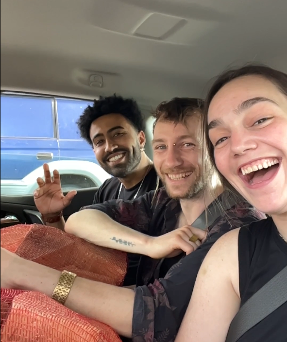

Our journey started early friday morning, Rafa and I stayed a night later in Dublin and where
set to meet up with the rest of the crew who had taken the car to Sligo the night before. Rafa and I walked to Hueston station and departed for
Deirdre and Indigo's home town for the first time.

Nathan, Indie and Deirdre met us a the train station and we quickly stopped by a Tesco to pick up the last bits of supplies we want to bring to
the campsite. In the shadow of Sligo's iconic Benbulbin we drove our way to the campsite nearly hitting a cow on the way.
Shortly enough we arrive at the bay. We quickly got to setting up the bell tent.
We chose a little pocketed ditch just on the ridge over looking the water. It would have been the perfect spot excepet for the stinging nettles where disbursed among the tall grass.
After expoloring the area however we managed to find a collection of dock leaves in ruins of an old nearby fort. After that we went swimming in the bay, the water was definately cold but not
quite the polar plungegs that Deirdre hand me doing with her in Dun Laogiaire. After that we cooked and called it an early night.
Day 2: A Day of Sea and Night of Tales
The next day we got up early had cooked breakfast over the fire. We quickly took to the sea again for a morning swim and we played keep it up with the soccer ball Rafa brought with him. We warmed up by the fire again the began exploring the area again.
We found a whole row of blackberry bushes and we picked and saved for when we had lunch.
The rest of that day was spent between hanging out in the campgrounds jamming to music, which everyone could play the guitar except for me.
Durring low tide the water went out increadly far leaving a large open swath of sand where we played a football game until the sun set. After it had gotten dark we returned to the campfire cooked dinner and I shared smores with people who had never had them.
Apprerently it is an american camping thing.
That night we stayed up late talking but the campfire and enjoying that stars. Nathan ever the storyteller and having working in the museum of Irish Folk history regaled us the story of Queen Medb and her Cairn that sat on top of knockneara
Benbulbin, Knockarea, and Miosgán Meadhbha
The legend of Queen Medb Queen Medb was a maybe actual maybe folk hero legendry figure in Irish history. A warrior woman who was known for her stregnth and beauty who ruled over the reigon of Connacht, where modern day Sligo resides in. It is unknown if Queen Medb was a real example of a real woman king that ruled in Ancient Ireland or is a representation of a goddes that had stripped of her Godhood during the christanization of the Ireland. Much of what is know about pre-christian Ireland wasn't deticated to written record there fore it has become difficult for historians to sort out what was true pagan mythology and what had be change to closer allign with the christian ideals that had become the norm in the Nation.
Day 3: Glowing Waters
Much of our third day was the same. We packed up early and Deirdre's mom came by with the family dog Beau to have a swim and help us move all the camping equipment. We learn that there was suppoed to be biolumincennt alge in the bay that night. We decided that we had to comeback for a midnight swim. We returned to Deirdres house had dinner and played cards until it was dark enough to return to the campsite. The sky was super clear that night, the air was clean enought you could see that streaks of color that made up the milky way. We swam out into the water and with out movements and agitaiton of the alge it glowed in dull blue fleck of light that where shocking reminicent of the stars shining above our heads.
After one finaly magical night in the water, we warmed up with hot water bottles and returned back to Deirdre's childhood home to sleep before returning to Dublin ealry the next morning.